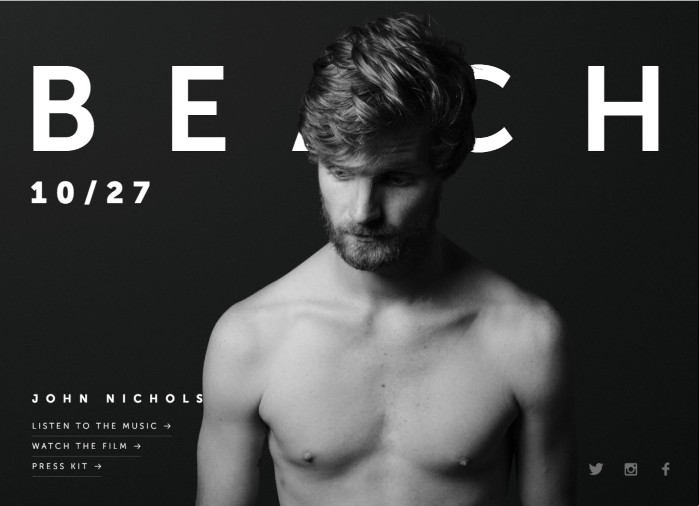

Lab 14:Typography 02
For this lab we were tasked with replicating a website wih large typography from one of the provided sources. We had to find a similar background and font to the real website to use in our "fake". It's the exact same task as the previous lab, except this time it had to be more difficult or less difficult depending on the difficulty of the replica made in lab 13.
Challange
It's the exact same task as the previous lab, except this time it had to be more difficult or less difficult depending on the difficulty of the replica made in lab 13.
Problems
This lab was actually easy because we just replicated the one show to us in class. We decided to do this because we couldn't get our lab 13 to work and it was extremely difficult for us. We went back and replicated the lab shown in class in an effort to better understand what we had to do in lab 13 and 14. Our version isn't exactly the same as the one done by Wes, we used our own image for the model and social media links.
Results
The real website
Fake Website